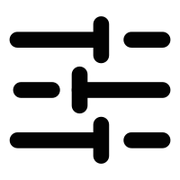
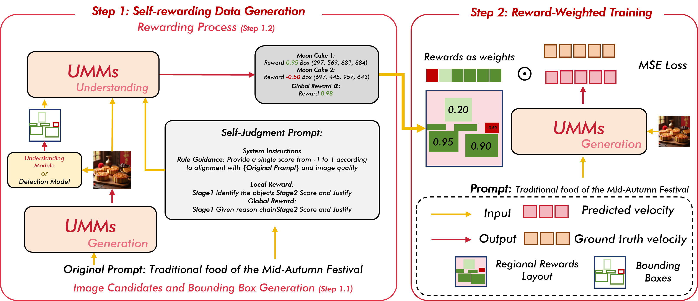
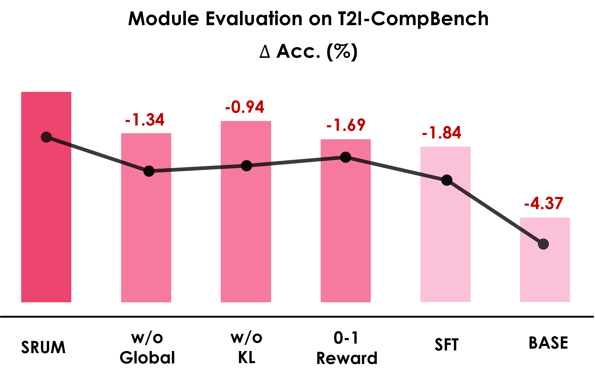
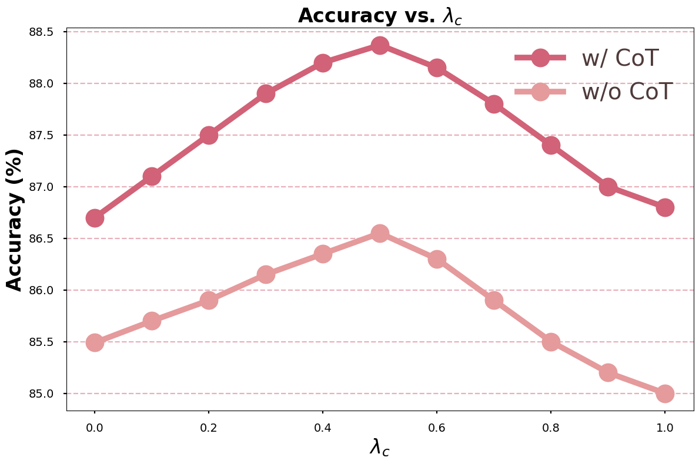
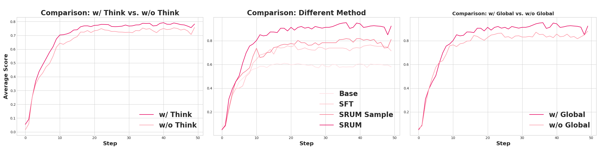
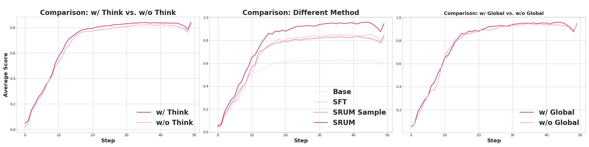
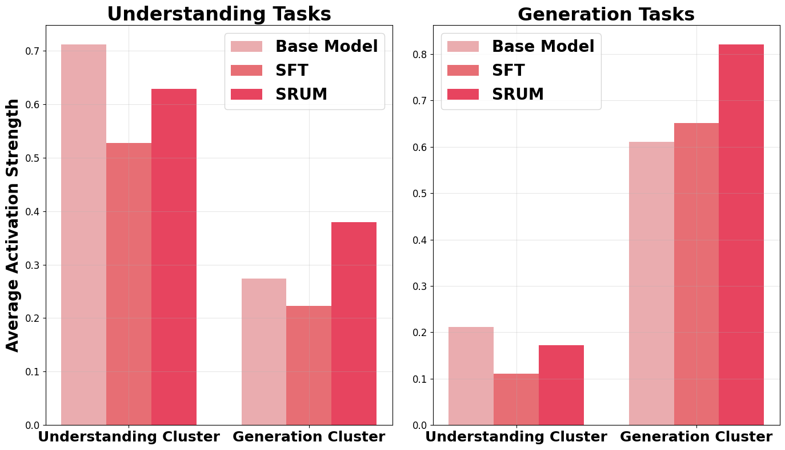
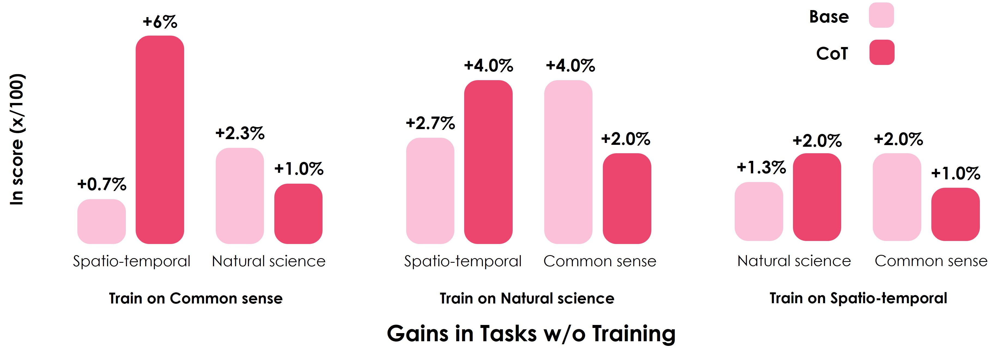

SRUM: Fine-Grained Self-Rewarding for Unified Multimodal Models
Introducing SRUM (Self-Rewarding for Unified Multimodal Models), a post-training framework that creates a cost-effective, self-iterative optimization loop. SRUM compels a model's understanding component to enhance its generation component for better compositional, reasoning-informed and knowledge-informed generation.
Self-Rewarding Loop: SRUM leverages a Unified Model's own understanding module to provide internal reward signals to its generative module, eliminating the need for costly external judges.

Fine-Grained Feedback: Our internal reward is decomposed into a global reward for overall compositional correctness and a local reward for attribute fidelity, enabling multi-scale refinement.
State-of-the-Art Improvements: SRUM significantly improves compositional and reasoning-informed generation, achieving SOTA results on T2I-CompBench (82.18 → 88.37) and T2I-ReasonBench (40.7 → 50.4 Acc.).
To address the challenge of Unified Multimodal Models (UMMs) failing to generate complex images that match their powerful understanding, we introduce SRUM, a self-rewarding framework. It creates a self-improvement loop where the model's own understanding module acts as an internal "teacher," providing corrective rewards to its generation module without needing new human-labeled data. The core innovation is a two-part reward system focusing on both global composition and local object-level details. This method establishes a new state of the art, significantly boosting image accuracy on key benchmarks like T2I-CompBench (from 82.18 to 88.37) and T2I-ResonBench (from 40.7 to 50.4).
This page is structured around three key components:
§Methodology: We detail the SRUM framework, including the rewarding process, the fine-grained judgment design (global and local rewards), and the weighted training objective.
§Results: We showcase how SRUM significantly boosts performance on challenging compositional benchmarks like T2I-CompBench and demonstrate its strong generalization capabilities.
§Analysis and Insights: We provide an empirical analysis of SRUM's components, revealing how different reward designs impact the model's inference process at various stages.
How SRUM Works: A Step-by-Step Pipeline

Figure 1: The SRUM pipeline, including reward generation, the design of fine-grained rewards, and their application during the reward-weighted training phase.
This section details the SRUM pipeline. Our process begins with generating high-quality image candidates using a Unified Multimodal Models (UMMs). These candidates are then meticulously evaluated by a dual-level system that assesses both local fidelity and global composition. The resulting scores are transformed into a dense, spatially-aware reward map, which is integrated into a novel reward-weighted training objective. This allows for targeted, region-specific model refinement while preventing "reward hacking."
1. Image & Bounding Box Generation
As shown in the figure, our pipeline begins by using a UMMs to synthesize candidate images from input prompts, leveraging a "think" mode (Chain-of-Thought) for high-fidelity outputs. We then produce bounding box proposals for each image. To enable precise grounding for the reward modeling, the UMMs' understanding module filters these proposals, retaining only those that are semantically aligned with the initial prompt.
2. Self-Judgment and Reward Generation
Next, we devise a dual-level judgment mechanism to assess image quality and prompt alignment.
Local Judgment:It checks specific parts of an object to see how accurate it is and to find any visual mistakes. Model must rate it on a strict scale from -1.0 to 1.0 and explain exactly why you gave that score, showing your step-by-step thinking. This makes the whole process clear and trustworthy.
Global Judgment: It checks if the overall layout of the entire image matches what the user's prompt wanted. To be fair, if the prompt didn't give specific instructions on how things should be arranged, we just give it a neutral score. This way, a perfectly good layout doesn't get marked down unfairly.
Following the judgment, we leverage the UMMs' grounding capabilities to generate fine-grained reward scores for all relevant image regions. These regional rewards are aggregated into a dense reward map for integration into our training objective.
3. Reward-Weighted Training
The core of our method is a novel training objective that uses the reward map to refine the model. It consists of two main components:
A reward-driven term $\mathcal{L}_{\text{r}}$ that uses the global score $\alpha$ and the regional reward map $R$ to modulate the training process. This mechanism enables fine-grained control, encouraging preservation where feedback is positive ($\alpha \cdot R > 0$) and repulsion where it is negative ($\alpha \cdot R < 0$).
$$\mathcal{L}_{\text{r}} = \mathbb{E} \left[ \alpha \cdot R \odot \left( v_\theta - (\epsilon - x_0^{~\text{gt}}) \right)^2 \right]$$
A constraint term $\mathcal{L}_{\text{ref}}$ that acts as a regularizer. It prevents the model from making drastic changes that distort the overall image structure, thereby preventing reward hacking.
$$\mathcal{L}_{~~\text{ref}} = \mathbb{E} \left[ \left\| v_\theta - (\epsilon - x_0^{~\text{gt}}) \right\|^2 \right]$$
The final training objective is a weighted sum of these two losses. This composite design enables targeted local refinement while maintaining global coherence and safeguarding the output from significant distortion.
We validated our Self-Rewarding for Unified Multimodal Models (SRUM) framework across various models and benchmarks to investigate several key aspects:
Performance and Generality: SRUM achieves state-of-the-art (SOTA) performance on complex compositional generation benchmarks and delivers consistent gains across different Unified Multimodal Models (UMMs) frameworks.
Component Efficacy: Ablation studies confirm that each component of the SRUM framework makes a critical contribution to the overall performance.
Robust Generalization: SRUM demonstrates strong in-domain and out-of-domain generalization, indicating that its improvements stem from enhanced reasoning capabilities rather than simple data memorization.
Experimental Setup
Models: We evaluate SRUM as a post-training phase on two powerful open-source UMMs: Bagel (as our primary model for in-depth analysis, in both standard and Chain-of-Thought modes) and Blip3o (to validate general effectiveness).
Benchmarks: Our training instruction data is sourced from T2I-CompBench, which also serves as our primary evaluation benchmark. To assess generalization, we test in-domain transferability on GenEval and WISE, and broader, out-of-domain reasoning on the challenging T2I-ReasonBench. For objective scoring, we use QwenVL-2.5-72B as the designated multimodal evaluator.
Main Results on T2I-CompBench
SRUM yields substantial and consistent performance gains across nearly all compositional categories. On T2I-CompBench, Bagel+SRUM with CoT achieved the highest score among UMMs at 88.37—a significant 3.91-point improvement over its base version. The impact is most pronounced in categories requiring sophisticated reasoning, where we set new SOTA scores.
Model
3d spatial
Color
Complex
Nonspatial
Numeracy
Shape
Spatial
Texture
Overall
T2I Models
FLUX.1-dev
76.39
90.63
83.51
87.47
75.30
80.20
84.23
87.07
83.10
FLUX.1-schnell
79.38
84.53
81.96
85.55
72.82
82.20
85.49
86.38
82.29
SD-3-medium
77.83
91.63
84.73
86.12
72.80
83.72
88.20
89.03
84.26
SD-xl-base-1
72.25
77.75
75.00
85.28
57.14
72.18
77.08
78.38
74.38
Unified Multimodal Models
Janus-Pro
76.17
84.25
80.28
80.47
56.43
65.14
79.67
69.67
74.01
Show-o2
88.61
87.73
87.88
85.91
69.74
73.99
86.60
82.17
82.83
OmniGen2
82.21
92.22
86.87
88.51
72.00
83.95
90.07
90.88
85.84
BLIP3o
81.73
89.92
85.55
84.78
71.67
83.75
92.47
87.45
84.66
Bagel
77.98
89.30
83.32
85.03
70.40
81.94
81.52
87.93
82.18
Bagel (CoT)
84.66
88.85
86.10
85.64
75.36
84.33
82.71
88.07
84.46
BLIP3o+SRUM
83.78
90.22
86.57
85.10
74.52
85.44
93.88
86.52
85.75
Bagel+SRUM
83.10
92.90
88.69
88.47
78.52
84.23
86.92
89.57
86.55
Bagel+SRUM (CoT)
88.60
92.90
91.31
90.48
80.12
84.47
89.93
89.15
88.37
Table 1: Comprehensive results on T2I-CompBench. Models with SRUM show significant improvements. Bold indicates the best score in a column. Green rows indicate models enhanced by SRUM.
Empirical Study and Deeper Insights
For a deeper analysis, we compare three variants of the Bagel model: the Base Model, a SFT Model (fine-tuned on its own generated data), and our SRUM Model.
Ablation Studies: What Matters Most?
Our ablation studies confirm that each component of SRUM is critical. As shown in the table below, removing any component degrades performance. The omission of the global reward led to a notable performance drop, underscoring its importance for capturing holistic compositional structure. Similarly, using a simple binarized reward signal was significantly less effective than our fine-grained rewards. The KL constraint proved crucial for training stability and preventing reward hacking, a finding consistent with methods like Direct Preference Optimization (DPO). We also we analyze the effect of different constraint ratios on the experimental outcomes. Across both Bagel with CoT and without CoT configurations, the results consistently indicate that $\lambda_{c} = 0.5$ is the most effective choice.

Figure 2: The results of ablation study. $\Delta$ Acc. shows the degradation relative to the complete SRUM method. Specifically, 0-1 Reward represents the binarized reward.

Figure 3: Hyperparameters Evaluation on T2I-CompBench. We report the accuracy in different $\lambda$ under two inference modes: CoT and without CoT.
Analysis of the Inference Process
To get a more granular view, we scored the model's output at each step of the inference process for both "layout" and "detail" quality. The analysis revealed that the Chain-of-Thought ("think") mode and our global reward primarily refine the overall layout in the early stages of inference. In contrast, improvements in fine-grained details, driven by our local rewards, emerge in the later stages. This demonstrates that our dual-reward approach effectively teaches the model to optimize both structure and fidelity.


Figure 4: Layout scores (top) and Detail scores (bottom) at different inference steps. Layout improves early, while detail refinement occurs later.
Impact on Understanding Capabilities
SRUM enhances generative skills with minimal impact on the model's core understanding capabilities. Evaluations on common VLM benchmarks show only marginal fluctuations compared to the base model. Furthermore, by analyzing functional cluster activations, we found that SFT tends to specialize by suppressing irrelevant capabilities. In contrast, SRUM enhances the primary task-relevant functions while maintaining others, promoting more robust and generalizable representations.

Figure 5: Functional cluster activations. SRUM enhances and orchestrates clusters, unlike SFT which simply suppresses them.
Benchmark
Base
SFT
SRUM
MME-Perception
1687
1682
1673
MME-Cognition
701
683
677
MMBench
85.0
84.6
84.8
MM-Vet
67.2
66.5
67.0
MMMU
55.3
55.0
55.2
MathVista
73.1
72.8
73.0
MMVP
69.3
68.7
70.0
Table 2: Results on understanding benchmarks show SRUM preserves core VLM capabilities.
Generalization Capabilities
A key strength of SRUM is its robust generalization to new tasks and domains, proving it learns underlying reasoning skills rather than memorizing training data.
In-Domain Generalization: When trained only on T2I-CompBench, our model shows strong transferable skills on the GenEval benchmark. It achieves the highest scores in key compositional areas like Counting and Color Attribute Binding, outperforming both the Base and SFT models.
Model
Single obj.
Two obj.
Counting
Colors
Position
Color attr.
Bagel
0.99
0.94
0.81
0.88
0.64
0.82
Bagel+SFT
0.96
0.94
0.79
0.92
0.59
0.78
Bagel+SRUM
0.98
0.94
0.83
0.90
0.64
0.83
Table 3: In-domain generalization results on GenEval show SRUM's superior compositional skills.
Knowledge-based Generalization: On the WISE benchmark, we found that training SRUM on just one category of reasoning prompts universally enhances performance on the other unseen categories, demonstrating effective knowledge transfer.

Figure 6: Results on the WISE benchmark show strong knowledge transfer.
Out-of-Domain Generalization: To test generalization to truly unseen domains, we evaluated our model on T2I-ReasonBench. SRUM achieves a superior understanding of complex instructions compared to both SFT and Base models, confirming that our algorithmic design improves generalization on complex problems from both a data and an algorithmic perspective.
Model
Entity
Idiom
Scientific
Textual Image
Acc.
Qual.
Acc.
Qual.
Acc.
Qual.
Acc.
Qual.
Bagel
36.9
88.1
29.7
77.3
40.2
69.5
40.49
71.5
Bagel+SFT
38.4
86.9
35.1
78.4
40.3
68.9
41.2
70.0
Bagel+SRUM
40.9
88.7
36.1
80.2
40.7
69.2
42.86
72.6
Table 4: Out-of-domain results on T2I-ReasonBench. SRUM consistently outperforms baselines in reasoning accuracy.
Discussion
SRUM is just a preliminary exploration of Unified Multimodal Models (UMMs). We found that there is still room for improvement in the prompts for the understanding part during the scoring phase, and we hope to scale this method to larger datasets. This article also utilizes some external prompts to improve performance for illustrative purposes. In fact, it is entirely possible to allow the understanding part to self-play questions and answers to build a more closed-loop training system.
Conclusion
This paper introduces SRUM, a fine-grained post-training framework that enables a model's understanding module to reward its generative module. Addtionally , SRUM decomposes the reward into local and global components, facilitating multi-scale alignment and refinement. Extensive experiments validate SRUM's effectiveness, setting new state-of-the-art results on complex compositional and reasoning benchmarks such as T2I-CompBench and T2I-ReasonBench. The framework demonstrates robust in-domain and out-of-domain generalization, and our empirical analysis confirms the efficacy of the fine-grained reward design. These findings illuminate the synergistic development of understanding and generation capabilities within a single model and establish the principle of self-reward as a promising direction for future research.
BibTeX
@article{jin2025srum,
title={SRUM: Fine-Grained Self-Rewarding for Unified Multimodal Models},
author={Jin, Weiyang and Niu, Yuwei and Liao, Jiaqi and Duan, Chengqi and Li, Aoxue and Gao, Shenghua and Liu, Xihui},
journal={arXiv preprint arXiv:your_arxiv_id},
year={2025}
}